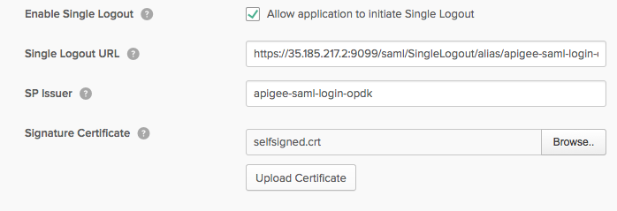

Configure single sign-out from the Edge UI
Edge for Private Cloud v. 4.17.09
By default, when a user logs out of the Edge UI, the Edge UI clears any cookies for the user's session. Clearing cookies requires the user to log in again the next time they want to access the Edge UI. If you have implemented a single sign-on environment, the user can still access any other services through their single sign-on credentials.
However, you might want a logout from any one service to sign the user out of all services. In this case, you can configure your IDP to support single sign-out.
You do not have to make configuration changes to the Edge UI to enable single sign-out. You configure the IDP to sign out the user when they log out of any service. Therefore, this steps to enable single sign-out are specific to your IDP.
To configure the IDP, you need the following information about the Edge UI:
- The single logout URL for the Edge UI: This URL is in the form: http:/apigee_sso_IP_DNS:9099/saml/SingleLogout/alias/apigee-saml-login-opdk
or if you enabled TLS on apigee-sso:
https:/apigee_sso_IP_DNS:9099/saml/SingleLogout/alias/apigee-saml-login-opdk
- The service provider issuer: The value for the Edge UI is apigee-saml-login-opdk.
- The SAML IDP cert: In http://docs.apigee.com/node/37421, you created a SAML IDP certificate named selfsigned.crt and saved it in /opt/apigee/customer/application/apigee-sso/saml/. Depending on your IDP, you must use that same cert to configure single sign-out.
For example, if you are using OKTA as your service provider, in the SAML settings for you application:
- In your OKTA application, select Show Advanced Settings.
- Select Allow application to initiate Single Logout.
- Enter the Single Logout URL for the Edge UI as shown above.
- Enter the SP Issuer (service provider issuer).
- In Signature Certificate, upload the /opt/apigee/customer/application/apigee-sso/saml/selfsigned.crt TLS cert. The following image shows this information for OKTA:

- Save your settings.
When a user next logs out of the Edge UI, the user is logged out of all services.